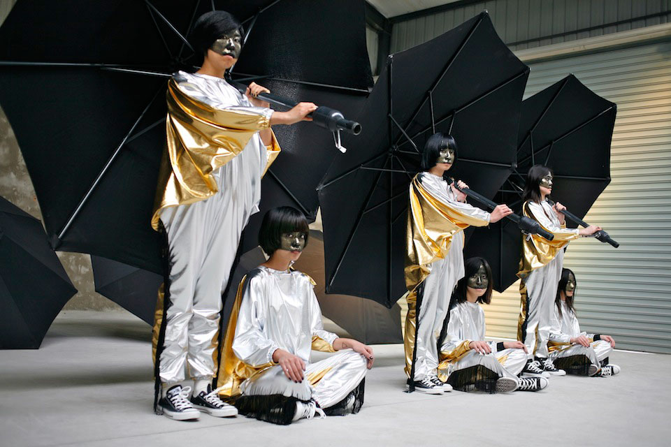
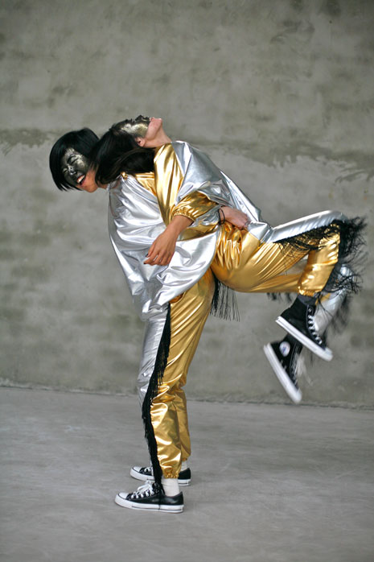

Special Episode: Shanghai
During a trip to Shanghai Kitty was provided support by Converse China to produce a photographic Episode within a 7 day turnaround. This was an exploration of how the Chinese women reacted to the principle of the Project and let go of their boundaries and reservations. It was a completely different experience for Kitty, both in the methods to get the women to let go and the challenge to direct with language difficulties. It was an incredibly gratifying experience. This was a test run for a series to take place during 2012 in various locations around China.
- Producer, Concept and Artistic Direction: Kitty Von-Sometime
- Photography: Tang Ting
- Costumes: made by Tom Yong
- Make up: Virginia Chen
- Behind the scenes filming: Vala Björnsdóttir
- 1st December 2011

